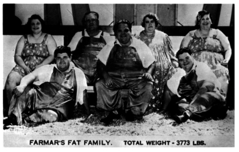

*= indicates "hot and spicy"**; ** = lifted from the Fusco Brothers by J.C. Duffy
Beautiful kid. House without roaches. A sheltered place to park my motorcycles. Awesome postdoc position in a fantastic lab. A wonderful oasis in the timeline of my life. It's only a matter of time before certain vengeful deities shake things up a bit.
So, where have I been since 1993? Surely, with a computer science degree I secured my chunk of the Internet Bubble Pie? Well, I took the high road (read: poor road) and have been doing the following...
In this time I've actually published some scholarly material. Spreading the knowledge- that's what I'm all about.
I have assembled a more formal little document describing my work up 'til now.
Yes, I have other interests.
This Web Page is sparse because I have kept YOU, Gentle Viewer, in mind. It is fast and simple, like an efficient (= sexy) German motorcycle. Things get a bit fancier (but are no less efficient/sexy) on my personal home page.
Last updated 01.2002.